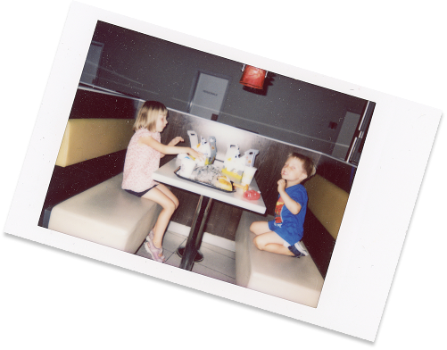

Hvem er vi?
Om os
Instant Ugen er et lille projekt, der drives af et par undervisere fra Multimediedesignuddannelsen på EK - Erhvervsakademi København.
Instant Ugen er et halvårligt projekt, hvor undervisere og studerende samarbejder om et digitalt design- og kommunikationsprojekt relateret til Instant Ugen-konkurrencen (denne hjemmeside).
I bund og grund ønsker vi bare at promovere instant fotografering og have det sjovt, mens vi gør det:-)

Dommerne
Bidrag vil blive gennemgået af:
- Jonas Hasle (Adjunkt, Multimediedesign på EK)
- Anders Dollerup (Lektor, Multimediedesign på EK)
- Birgitte Heide (Lektor, Multimediedesign på EK)
- Stefan Grage (Lektor, Multimediedesign på EK)
- Studerende på Digital Design Valgfaget på Lektor, Multimediedesign på EK
Sponsorer
Instant Ugen er ikke relateret til nogen virksomheder inden for Instant foto-branchen. Den eneste organisation, der støtter os, er EK - Erhvervsakademi København. I hvert fald indtil videre.